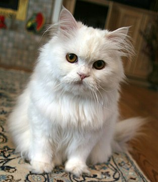

Moja strona przedstawia napopularniejsze rasy kotow
Koty perskie – Długowłose, dość krępe, z płaskim nosem. Nie są zbytnio ruchliwe – w nadmiernej aktywności przeszkadza im budowa ciała i krótkie jak na koty nogi.

Koty syberyjskie - Dostojne, długowłose, uznawane za rasę, która powstała na drodze naturalnej selekcji. Pochodzą z rejonu dalekiej Syberii. Są towarzyskie i energiczne, inteligentne, przywiązują się do ludzi.